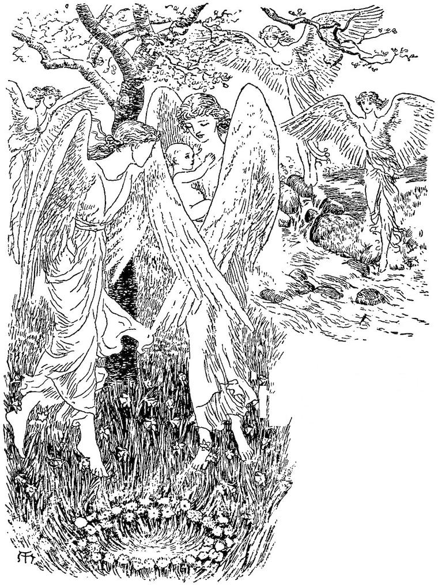

Blows over the hard earth;
Time is not more confused and cold,
Nor keeps more wintry mirth.
Blow, Time—blow, winter’s Wind!
Through chinks of Time, heaven peepeth out,
And Spring the frost behind.”
G. E. M.
They who believe in the influences of the stars over the fates of men, are, in feeling at least, nearer the truth than they who regard the heavenly bodies as related to them merely by a common obedience to an external law. All that man sees has to do with man. Worlds cannot be without an intermundane relationship. The community of the centre of all creation suggests an interradiating connection and dependence of the parts. Else a grander idea is conceivable than that which is already imbodied. The blank, which is only a forgotten life, lying behind the consciousness, and the misty splendour, which is an undeveloped life, lying before it, may be full of mysterious revelations of other connexions with the worlds around us, than those of science and poetry. No shining belt or gleaming moon, no red and green glory in a self-encircling twin-star, but has a relation with the hidden things of a man’s soul, and, it may be, with the secret history of his body as well. They are portions of the living house wherein he abides.
Creeps a world, whose course had begun,
On a weary path with a weary pace,
Before the Earth sprang forth on her race:
But many a time the Earth had sped
Around the path she still must tread,
Ere the elder planet, on leaden wing,
Once circled the court of the planet’s king.
The seasons are not as our seasons are;
But many a year hath Autumn to dress
The trees in their matron loveliness;
As long hath old Winter in triumph to go
O’er beauties dead in his vaults below;
And many a year the Spring doth wear
Combing the icicles from her hair;
And Summer, dear Summer, hath years of June,
With large white clouds, and cool showers at noon:
And a beauty that grows to a weight like grief,
Till a burst of tears is the heart’s relief.
May never rejoice in the hoping Spring;
Though their own heart-buds are bursting with joy,
And the child hath grown to the girl or boy;
But may die with cold and icy hours
Watching them ever in place of flowers.
And some who awake from their primal sleep,
When the sighs of Summer through forests creep,
Live, and love, and are loved again;
Seek for pleasure, and find its pain;
Sink to their last, their forsaken sleeping,
With the same sweet odours around them creeping.
Now the children, there, are not born as the children are born in worlds nearer to the sun. For they arrive no one knows how. A maiden, walking alone, hears a cry: for even there a cry is the first utterance; and searching about, she findeth, under an overhanging rock, or within a clump of bushes, or, it may be, betwixt gray stones on the side of a hill, or in any other sheltered and unexpected spot, a little child. This she taketh tenderly, and beareth home with joy, calling out, “Mother, mother”—if so be that her mother lives—“I have got a baby—I have found a child!” All the household gathers round to see;—“Where is it? What is it like? Where did you find it?” and such-like questions, abounding. And thereupon she relates the whole story of the discovery; for by the circumstances, such as season of the year, time of the day, condition of the air, and such like, and, especially, the peculiar and never-repeated aspect of the heavens and earth at the time, and the nature of the place of shelter wherein it is found, is determined, or at least indicated, the nature of the child thus discovered. Therefore, at certain seasons, and in certain states of the weather, according, in part, to their own fancy, the young women go out to look for children. They generally avoid seeking them, though they cannot help sometimes finding them, in places and with circumstances uncongenial to their peculiar likings. But no sooner is a child found, than its claim for protection and nurture obliterates all feeling of choice in the matter. Chiefly, however, in the season of summer, which lasts so long, coming as it does after such long intervals; and mostly in the warm evenings, about the middle of twilight; and principally in the woods and along the river banks, do the maidens go looking for children just as children look for flowers. And ever as the child grows, yea, more and more as he advances in years, will his face indicate to those who understand the spirit of Nature, and her utterances in the face of the world, the nature of the place of his birth, and the other circumstances thereof; whether a clear morning sun guided his mother to the nook whence issued the boy’s low cry; or at eve the lonely maiden (for the same woman never finds a second, at least while the first lives) discovers the girl by the glimmer of her white skin, lying in a nest like that of the lark, amid long encircling grasses, and the upward-gazing eyes of the lowly daisies; whether the storm bowed the forest trees around, or the still frost fixed in silence the else flowing and babbling stream.

After they grow up, the men and women are but little together. There is this peculiar difference between them, which likewise distinguishes the women from those of the earth. The men alone have arms; the women have only wings. Resplendent wings are they, wherein they can shroud themselves from head to foot in a panoply of glistering glory. By these wings alone, it may frequently be judged in what seasons, and under what aspects, they were born. From those that came in winter, go great white wings, white as snow; the edge of every feather shining like the sheen of silver, so that they flash and glitter like frost in the sun. But underneath, they are tinged with a faint pink or rose-colour. Those born in spring have wings of a brilliant green, green as grass; and towards the edges the feathers are enamelled like the surface of the grass-blades. These again are white within. Those that are born in summer have wings of a deep rose-colour, lined with pale gold. And those born in autumn have purple wings, with a rich brown on the inside. But these colours are modified and altered in all varieties, corresponding to the mood of the day and hour, as well as the season of the year; and sometimes I found the various colours so intermingled, that I could not determine even the season, though doubtless the hieroglyphic could be deciphered by more experienced eyes. One splendour, in particular, I remember—wings of deep carmine, with an inner down of warm gray, around a form of brilliant whiteness.
She had been found as the sun went down through a low sea-fog, casting crimson along a broad sea-path into a little cave on the shore, where a bathing maiden saw her lying.
But though I speak of sun and fog, and sea and shore, the world there is in some respects very different from the earth whereon men live. For instance, the waters reflect no forms. To the unaccustomed eye they appear, if undisturbed, like the surface of a dark metal, only that the latter would reflect indistinctly, whereas they reflect not at all, except light which falls immediately upon them. This has a great effect in causing the landscapes to differ from those on the earth. On the stillest evening, no tall ship on the sea sends a long wavering reflection almost to the feet of him on shore; the face of no maiden brightens at its own beauty in a still forest-well. The sun and moon alone make a glitter on the surface. The sea is like a sea of death, ready to ingulf and never to reveal: a visible shadow of oblivion. Yet the women sport in its waters like gorgeous sea-birds. The men more rarely enter them. But, on the contrary, the sky reflects everything beneath it, as if it were built of water like ours. Of course, from its concavity there is some distortion of the reflected objects; yet wondrous combinations of form are often to be seen in the overhanging depth. And then it is not shaped so much like a round dome as the sky of the earth, but, more of an egg-shape, rises to a great towering height in the middle, appearing far more lofty than the other. When the stars come out at night, it shows a mighty cupola, “fretted with golden fires,” wherein there is room for all tempests to rush and rave.
One evening in early summer, I stood with a group of men and women on a steep rock that overhung the sea. They were all questioning me about my world and the ways thereof. In making reply to one of their questions, I was compelled to say that children are not born in the Earth as with them. Upon this I was assailed with a whole battery of inquiries, which at first I tried to avoid; but, at last, I was compelled, in the vaguest manner I could invent, to make some approach to the subject in question. Immediately a dim notion of what I meant, seemed to dawn in the minds of most of the women. Some of them folded their great wings all around them, as they generally do when in the least offended, and stood erect and motionless. One spread out her rosy pinions, and flashed from the promontory into the gulf at its foot. A great light shone in the eyes of one maiden, who turned and walked slowly away, with her purple and white wings half dispread behind her. She was found, the next morning, dead beneath a withered tree on a bare hill-side, some miles inland. They buried her where she lay, as is their custom; for, before they die, they instinctively search for a spot like the place of their birth, and having found one that satisfies them, they lie down, fold their wings around them, if they be women, or cross their arms over their breasts, if they are men, just as if they were going to sleep; and so sleep indeed. The sign or cause of coming death is an indescribable longing for something, they know not what, which seizes them, and drives them into solitude, consuming them within, till the body fails. When a youth and a maiden look too deep into each other’s eyes, this longing seizes and possesses them; but instead of drawing nearer to each other, they wander away, each alone, into solitary places, and die of their desire. But it seems to me, that thereafter they are born babes upon our earth: where, if, when grown, they find each other, it goes well with them; if not, it will seem to go ill. But of this I know nothing. When I told them that the women on the Earth had not wings like them, but arms, they stared, and said how bold and masculine they must look; not knowing that their wings, glorious as they are, are but undeveloped arms.
But see the power of this book, that, while recounting what I can recall of its contents, I write as if myself had visited the far-off planet, learned its ways and appearances, and conversed with its men and women. And so, while writing, it seemed to me that I had.
The book goes on with the story of a maiden, who, born at the close of autumn, and living in a long, to her endless winter, set out at last to find the regions of spring; for, as in our earth, the seasons are divided over the globe. It begins something like this:
Dropping from off the old trees away,
One by one; or else in a shower
Crowding over the withered flower
For as if they had done some grievous wrong,
The sun, that had nursed them and loved them so long,
Grew weary of loving, and, turning back,
Hastened away on his southern track;
And helplessly hung each shrivelled leaf,
Faded away with an idle grief.
And the gusts of wind, sad Autumn’s sighs,
Mournfully swept through their families;
Casting away with a helpless moan
All that he yet might call his own,
As the child, when his bird is gone for ever,
Flingeth the cage on the wandering river.
And the giant trees, as bare as Death,
Slowly bowed to the great Wind’s breath;
And groaned with trying to keep from groaning
Amidst the young trees bending and moaning.
And the ancient planet’s mighty sea
Was heaving and falling most restlessly,
And the tops of the waves were broken and white,
Tossing about to ease their might;
And the river was striving to reach the main,
And the ripple was hurrying back again.
Nature lived in sadness now;
Sadness lived on the maiden’s brow,
As she watched, with a fixed, half-conscious eye,
One lonely leaf that trembled on high,
Till it dropped at last from the desolate bough—
Sorrow, oh, sorrow! ’tis winter now.
And her tears gushed forth, though it was but a leaf,
For little will loose the swollen fountain of grief:
When up to the lip the water goes,
It needs but a drop, and it overflows.
Must pass away ere the buds appear:
Many a night of darksome sorrow
Yield to the light of a joyless morrow,
Ere birds again, on the clothed trees,
Shall fill the branches with melodies.
She will dream of meadows with wakeful streams;
Of wavy grass in the sunny beams;
Of hidden wells that soundless spring,
Hoarding their joy as a holy thing;
Of founts that tell it all day long
To the listening woods, with exultant song;
She will dream of evenings that die into nights,
Where each sense is filled with its own delights,
And the soul is still as the vaulted sky,
Lulled with an inner harmony;
Changed into perfume, the gathered light;
And the darkness sinks upon all their host,
Till the sun sail up on the eastern coast—
She will wake and see the branches bare,
Weaving a net in the frozen air.
The story goes on to tell how, at last, weary with wintriness, she travelled towards the southern regions of her globe, to meet the spring on its slow way northwards; and how, after many sad adventures, many disappointed hopes, and many tears, bitter and fruitless, she found at last, one stormy afternoon, in a leafless forest, a single snowdrop growing betwixt the borders of the winter and spring. She lay down beside it and died. I almost believe that a child, pale and peaceful as a snowdrop, was born in the Earth within a fixed season from that stormy afternoon.